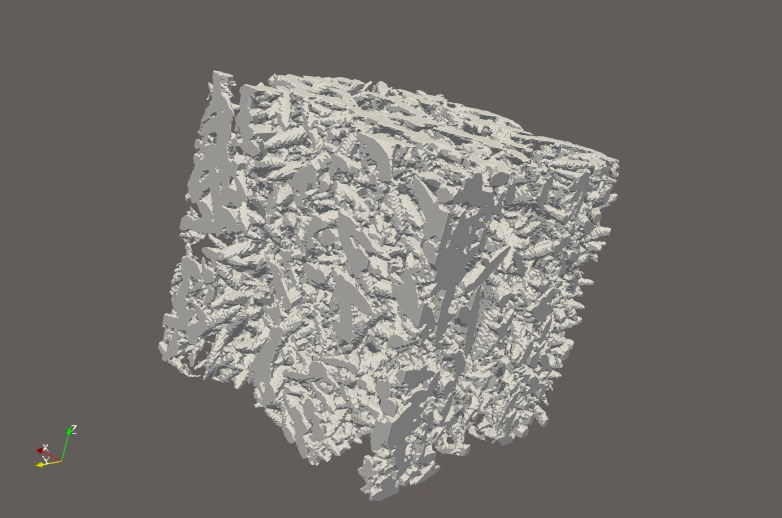

Oxygen transport through ZrC oxide scales
Problem
Zirconium carbide is a candidate ultra-high-temperature ceramic for hypersonic thermal protection. In service it oxidizes, forming a porous zirconia scale at the surface, and the rate at which oxygen moves through that scale governs how fast the underlying material is consumed. Predicting that transport means having a microstructure to simulate — but real scales are only available as two-dimensional micrographs, and the pore network that actually carries the oxygen is three-dimensional.
Approach
I wrote a generator in Python that produces synthetic three-dimensional oxide-scale microstructures calibrated to reference micrographs of oxidized ZrC. Pore statistics were sampled by Monte Carlo methods, and a columnar Voronoi construction was adapted to reproduce the through-thickness scale structure rather than the equiaxed morphology the original model assumed.
Calibration used only bulk porosity, pore aspect ratio, and mean chord length. Everything else was left free, so that the remaining morphometrics could serve as an independent check rather than a restatement of the fit.


Results
- Generated statistically representative ZrO2 scale microstructures spanning the low- and high-porosity regimes observed experimentally.
- Computed oxygen diffusivity across twelve temperature conditions from the generated structures.
- Quantified where the model diverges from reality rather than reporting only agreement — the under-predicted long-range pore connectivity is a known limitation and bounds how far the diffusivity results should be trusted.
- Designed and executed a separate experiment to determine the effective Pilling–Bedworth ratio of ZrC at elevated temperature and low pressure.
My role
I wrote the generator, the calibration routine, and the validation analysis, and designed and ran the Pilling–Bedworth experiment. Reference micrographs used for calibration come from prior work in the group.
Code
This work is being prepared for publication. Code is available on request.